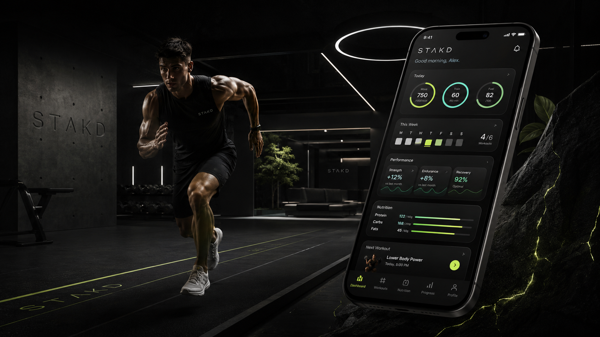

Premium performance platform
STAKD
Stack your training. Track your progress. Perform at your peak.
A cinematic fitness hub for workouts, activity plans, nutrition, recovery analytics, food tracking, workout tracking, and guided performance support.
40+Preset plans
7Goal tracks
2Daily trackers

StrengthFat LossWorkout TrackerFood TrackerMuscleRecoveryNutritionMobilityGuided SupportStrengthFat LossWorkout TrackerFood TrackerMuscleRecoveryNutritionMobilityGuided Support
Choose your path
Now built as a multi-page experience.
The site is broken into focused pages so users can move through the journey without scrolling forever.
Plan BuilderEnter age, height, weight, goals, equipment, and schedule. Get a recommended path.
ProgramsBrowse Strength, Fat Loss, Muscle, Mobility, Longevity, and Athletic tracks.
Workout TrackerLog lifts, sets, reps, weight, duration, distance, cardio, bodyweight work, and volume.
Food TrackerLog items by ounces, grams, servings, or each. Watch calories and macros move live.
PerformanceSee analytics, recovery cues, output tracking, and activity programming.
NutritionReview food suggestions, macro tracking, and performance meal structure.
ConsultRequest guided support for your training and performance journey.